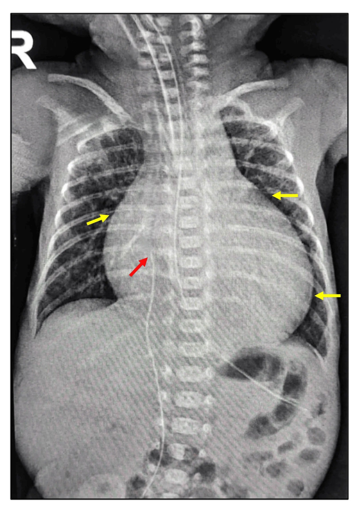
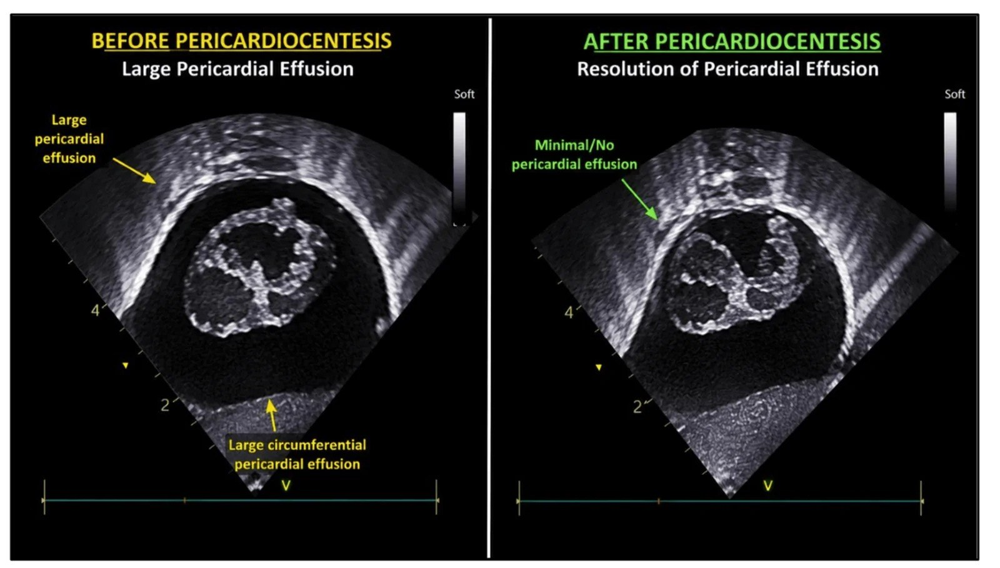
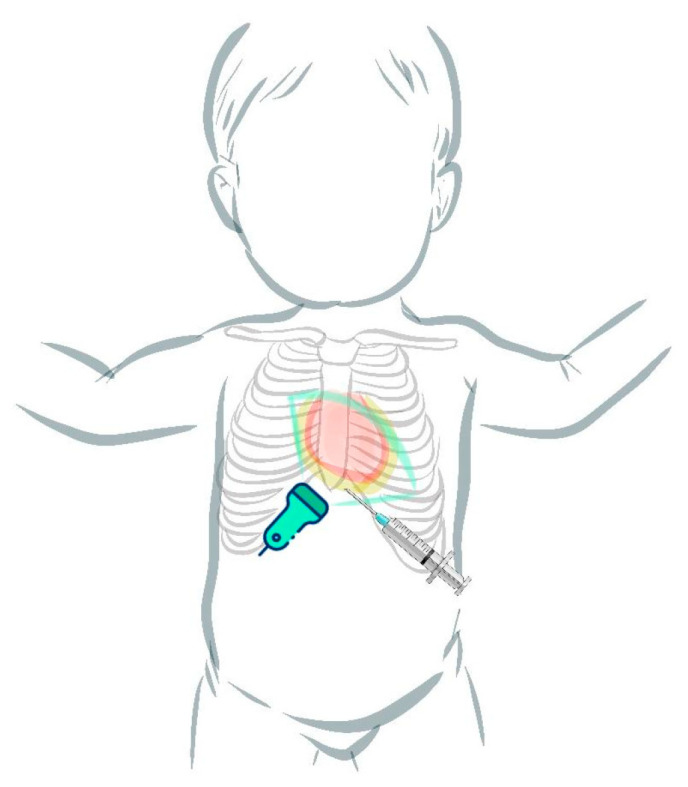
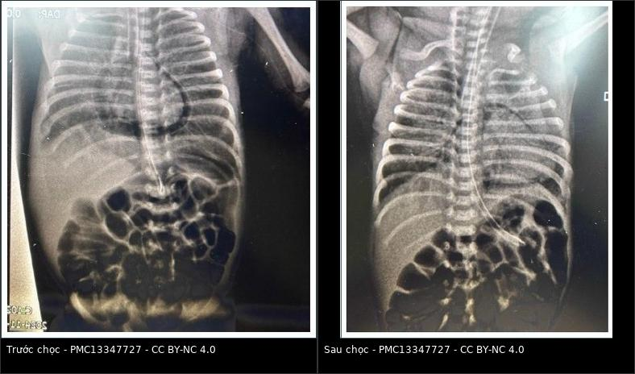

604 — Chọc/dẫn lưu màng ngoài tim qua da ở nhũ nhi & tràn khí màng ngoài tim áp lực / Percutaneous pericardiocentesis in infants & tension pneumopericardium
Tags: pattern:dich-mang-ngoai-tim pattern:tran-khi-mang-ngoai-tim pattern:chèn-ép-tim vung:mang-ngoai-tim vung:tim protocol:sieu-am-tim protocol:choc-mang-ngoai-tim protocol:POCUS
Mức chắc chắn (certainty): ca nguyên văn (verbatim case) — neo vào hai ca nguyên văn có hình ảnh: (1) trẻ 28+1 tuần/1115 g bị tràn khí màng ngoài tim (pneumopericardium) áp lực ngày 7, ngừng tim, được chọc dưới mũi ức dưới siêu âm, hút 4 mL khí rồi hồi phục (Akboga E et al., Sisli Etfal Hastan Tip Bul 2026, PMC13347727); (2) trẻ 24 tuần/640 g có tràn dịch màng ngoài tim khổng lồ + chèn ép tim do catheter, chọc hút 13 mL dịch (Sakharkar S et al., Cureus 2026, PMC13569918). Bổ sung bằng loạt 68 thủ thuật ở trẻ em (Lee DW et al., BMC Pediatr 2026, PMC12853591) và 16 ca tràn dịch do catheter ở NICU (Cîrstoveanu C et al., Life 2024, PMC11433190).
1. Tổng quan bệnh học – cơ chế hình ảnh
- Khoang màng ngoài tim ở nhũ nhi rất nhỏ: thể tích dịch sinh lý thường < 5 mL; tràn dịch màng ngoài tim (pericardial effusion) được định nghĩa khi dịch vượt 5 mL (Cîrstoveanu et al., 2024, PMC11433190). Vì khoang nhỏ và cơ tim non, một lượng dịch/khí nhỏ tích tụ NHANH đã đủ gây chèn ép tim (cardiac tamponade) — yếu tố quyết định là tốc độ tích tụ, không chỉ thể tích.
- Cơ chế chèn ép tim: màng ngoài tim tạng mỏng, màng ngoài tim thành dày và ít đàn hồi; dịch/khí làm tăng áp lực trong màng ngoài tim → tăng áp lực tâm trương của thất → giảm đổ đầy thất → giảm thể tích nhát bóp. Ở trẻ sơ sinh, thành nhĩ phải mỏng, ít dự trữ → sụp nhĩ/thất phải thì tâm trương là dấu hiệu sớm trên siêu âm tim.
- Vì sao tràn khí màng ngoài tim hay gặp ở trẻ thở máy (cơ chế Macklin): phế nang căng vỡ → khí đi theo bao quanh mạch máu (perivascular sheath) về rốn phổi → vào trung thất → qua các vùng thiếu mô collagen quanh tĩnh mạch phổi vào khoang màng ngoài tim. Vì vậy tràn khí màng ngoài tim thường đi kèm tràn khí màng phổi/trung thất/khí kẽ phổi.
- Vì sao thấy trên hình — vật lý: khí có đậm độ cực thấp (khoảng −1000 HU trên CT) nên đen tuyệt đối trên X-quang; dịch có đậm độ nước (0–20 HU) nên xám như mô mềm. Cả hai đều làm bóng tim to, nhưng khí tạo quầng sáng (halo) ôm sát bóng tim, còn dịch tạo bóng tim dạng “bình nước” (water-bottle) với bờ tim bị che mờ.
- Ngưỡng định lượng và bối cảnh:
- Tràn khí màng ngoài tim: gặp ở 2% trẻ rất nhẹ cân (VLBW) và 3,5% trẻ thở máy; trong một loạt 2.389 VLBW, các rò khí kèm theo là tràn khí màng phổi 49%, khí kẽ phổi 46%, tràn khí trung thất 39%, khí dưới da 17%, khí phúc mạc 10%, khí tắc mạch toàn thân 5% (Akboga et al., 2026, PMC13347727).
- Dấu “halo sign” có mặt ở 96% (48/50) ca tràn khí màng ngoài tim trong loạt Burt & Lester, nhưng không phải lúc nào cũng thấy ngay lần chụp đầu (Akboga et al., 2026).
- Tử vong lịch sử 72% trước kỷ nguyên surfactant; hiện nay giảm rõ nếu chẩn đoán sớm + giải áp kịp (Akboga et al., 2026).
- Tràn dịch do catheter trung tâm: tỷ lệ 3,8/1.000 catheter (khoảng 0,07–2%), 92% tiến triển chèn ép tim, tử vong chung ~27%; > 60% ca do PICC có di trú đầu catheter vào trong tim (Sakharkar et al., 2026, PMC13569918).
- Chọc/dẫn lưu ở trẻ em: loạt 68 thủ thuật/58 bệnh nhân, đường dưới mũi ức 77,9%, tái phát 13%; đặt catheter lưu làm giảm tái phát rõ (8,1% vs 100% khi chỉ chọc hút một lần); biến chứng nặng 4,4%, nhẹ 2,9% (Lee et al., 2026, PMC12853591).
- Lượng khí cần hút để thoát chèn ép: trong y văn 2,9–14 mL/kg; ca 1115 g chỉ cần 4 mL (~3,6 mL/kg) là nhịp tim tăng > 100 lần/phút và SpO₂ lên 100% (Akboga et al., 2026).
2. Mẫu hình + chẩn đoán phân biệt theo vị trí (gamut)
- Trong màng ngoài tim — dịch (pericardial effusion): bóng tim to dạng bình nước, bờ tim mờ, phổi sáng; siêu âm thấy khoảng trống âm (anechoic) giữa màng ngoài tim tạng và thành, thay đổi theo thì tim. Nguyên nhân ở nhũ nhi: catheter trung tâm (UVC/PICC), sau mổ tim, nhiễm trùng huyết, suy giáp, bệnh ác tính, tự phát.
- Trong màng ngoài tim — khí (pneumopericardium): quầng khí đen ôm sát bóng tim, KHÔNG vượt lên trên các mạch máu lớn, có thể thấy khí cả dưới bờ tim; khi áp lực → bóng tim nhỏ lại, tụt huyết áp, chậm nhịp, mạch nghịch.
- Trung thất (mediastinum) — tràn khí trung thất: khí nâng tuyến ức (dấu cánh buồm/spinnaker sail), dấu cơ hoành liên tục (continuous diaphragm sign), lan lên cổ; không có quầng khí ôm sát toàn bộ bóng tim.
- Khoang màng phổi — tràn dịch/tràn khí màng phổi: bờ phổi tạng rõ, dịch meniscus hoặc khí rãnh sâu; siêu âm mất trượt màng phổi/điểm phổi.
- Bóng tim to do bệnh tim: Ebstein, hồi lưu tĩnh mạch phổi bất thường toàn phần, viêm cơ tim, tim phì đại — không có khoảng dịch/khí trên siêu âm; đừng chọc chỉ vì “tim to” trên X-quang.
- Catheter trong buồng tim: đầu catheter nằm trong nhĩ phải trên siêu âm/X-quang; có thể gây tràn dịch dù vị trí ban đầu “ổn” — luôn kiểm tra lại khi có suy sụp bất ngờ.
3. Bảng so sánh phân biệt (ma trận đối chiếu)
| Thực thể (entity) | Hình ảnh điển hình | Chốt vào (rule-in) | Chốt loại (rule-out) | Gợi ý xác nhận |
|---|---|---|---|---|
| Dịch màng ngoài tim | Bóng tim “bình nước”, bờ tim mờ; siêu âm: khoảng âm quanh tim | Khoảng âm (anechoic) giữa lá tạng và lá thành, thay đổi theo nhịp tim | Khí đen ôm sát tim, không có khoảng âm → tràn khí; bóng tim to nhưng không có khoảng dịch → bệnh cơ tim | Siêu âm tim 4 cửa sổ; đo độ dày dịch thì tâm trương; Doppler dòng chảy |
| Tràn khí màng ngoài tim | Quầng khí đen ôm sát bóng tim, không vượt trên mạch máu lớn | Halo sign + khí dưới bờ tim + siêu âm thấy khí/bóng sáng trong màng tim | Khí nâng tuyến ức, cơ hoành liên tục, lan lên cổ → trung thất | X-quang thẳng/nghiêng; siêu âm tim tại giường |
| Tràn khí trung thất | Dải khí dọc trung thất, nâng tuyến ức, cơ hoành liên tục | Nâng tuyến ức (spinnaker sail) + continuous diaphragm sign | Quầng khí chỉ quanh tim, không lên cổ → màng ngoài tim | X-quang; CT khi cần |
| Tràn dịch/tràn khí màng phổi | Bờ phổi tạng, meniscus hoặc rãnh sâu | Bờ phổi tạng + mất mạch máu băng qua | Quầng khí ôm tim, không có bờ phổi tạng | Siêu âm phổi (mất trượt/điểm phổi); X-quang nghiêng |
| Bóng tim to do bệnh tim | Tim to toàn bộ, không có quầng khí/dịch | Siêu âm: buồng tim giãn/phì đại, không có khoảng dịch | Có khoảng dịch/khí → nguyên nhân ngoài cơ tim | Siêu âm tim; ECG; BNP nếu cần |
| Catheter trong nhĩ phải | Đầu catheter ở nhĩ phải; có thể tràn dịch | Đầu catheter trong buồng tim + tràn dịch mới | Đầu catheter ngoài tim, không dịch → tìm nguyên nhân khác | Siêu âm tim; rút/đổi catheter; X-quang kiểm tra |

Bóng tim dạng bình nước (water-bottle) với bờ tim bị che mờ (mũi tên vàng); đầu UVC ở ngang T9, dưới cơ hoành. Đây là dấu hiệu X-quang kinh điển nhưng không đặc hiệu — phải xác nhận bằng siêu âm tim. Nguồn: Sakharkar S et al., Cureus 2026 (PMC13569918), CC BY 4.0.
Trái: tràn dịch màng ngoài tim lượng lớn (mũi tên vàng) quanh tim. Phải: sau chọc hút, gần như hết dịch. Siêu âm tại giường là chốt chẩn đoán + hướng dẫn chọc. Nguồn: Sakharkar S et al., Cureus 2026 (PMC13569918), CC BY 4.0.4. Protocol chụp + hệ phân độ/điểm chuẩn hóa
- Không có RADS riêng cho màng ngoài tim ở nhũ nhi. Phân tầng thực hành dựa trên huyết động và siêu âm:
- Không triệu chứng + không chèn ép: theo dõi, điều trị nguyên nhân, siêu âm lặp lại.
- Có triệu chứng/chèn ép: chọc giải áp ngay.
- Tràn khí màng ngoài tim áp lực: giải áp không chờ X-quang lặp.
- Siêu âm tim tại giường (cardiac POCUS) — đầu tay: đầu dò cao tần 5–10 MHz (nhũ nhi), 4 cửa sổ: dưới mũi ức (subcostal), mỏm (apical 4 chambers), cạnh ức trái, trên xương ức. Tìm:
- khoảng dịch âm quanh tim, độ dày > 5 mL (ước tính);
- sụp nhĩ phải thì tâm trương, sụp thất phải thì tâm trương, IVC giãn không xẹp, biến thiên dòng chảy van hai lá/phổi → chèn ép tim;
- khí trong màng ngoài tim: bóng sáng/“màn sương” che tim, mất hình ảnh tim ở một cửa sổ.
- X-quang ngực thẳng (AP, nằm ngửa): halo sign, bóng tim bình nước, đẩy trung thất; không loại trừ nếu âm.
- Kỹ thuật chọc dẫn lưu (percutaneous pericardiocentesis):
- Đường dưới mũi ức (subxiphoid) là đường phổ biến nhất (77,9% trong loạt trẻ em) và thuận lợi ở nhũ nhi; đường mỏm (apical) là lựa chọn thay thế.
- Dưới hướng dẫn siêu âm liên tục, sát trùng, gây tê tại chỗ (nếu huyết động cho phép).
- Kim 21–22G gắn bơm tiêm 10 mL, đi dưới mũi ức, hướng về vai trái, vừa đi vừa hút; khi thấy khí/dịch, ngừng tiến kim. Với khí, có thể dùng cannula ngoại vi 22G; với dịch, đặt catheter pigtail theo Seldinger để dẫn lưu liên tục.
- Lượng hút: khí 2,9–14 mL/kg là khoảng đã báo cáo; dịch: hút đủ để huyết động ổn định, không cần hút cạn ngay. Ca 640 g hút 13 mL; ca 1115 g hút 4 mL khí.
- Duy trì catheter đến khi dịch < 30 mL/ngày (thực hành ở loạt trẻ em) hoặc hết khí; theo dõi sát 24 giờ đầu.
- Biến chứng: chọc vào cơ tim/mạch vành, tràn khí màng phổi, rối loạn nhịp, khí tắc mạch, nhiễm trùng, tái phát; biến chứng nặng 4,4%, nhẹ 2,9%. Suy tim sau giải ép (paradoxical decompression) gặp ở 2/68 — hồi sức dịch + inotrope.
- Flowchart xử trí nhũ nhi có bóng tim to + suy sụp:
flowchart TD
A[Nhũ nhi suy sụp: chậm nhịp, tụt huyết áp, tim mờ] --> B[Siêu âm tim tại giường NGAY]
B --> C{Có khoảng dịch/khí trong màng ngoài tim?}
C -->|Không| D[Tìm nguyên nhân khác: bệnh cơ tim, tràn khí màng phổi, nhiễm trùng]
C -->|Có| E{Khí hay dịch?}
E -->|Khí| F{Có chèn ép tim / áp lực?}
F -->|Có| G[Chọc dưới mũi ức dưới siêu âm: kim 22G, hút khí 2,9-14 mL/kg]
F -->|Không| H[Giảm áp lực đường thở, theo dõi sát; chọc khi xấu đi]
E -->|Dịch| I{Có chèn ép tim?}
I -->|Có| J[Chọc hút dưới siêu âm + đặt catheter pigtail]
I -->|Không| K[Theo dõi, điều trị nguyên nhân, siêu âm lặp lại]
G --> L[Siêu âm + X-quang kiểm tra; rút catheter khi hết khí]
J --> M[Giữ catheter đến khi dịch dưới 30 mL/ngày; theo dõi suy tim sau giải ép]
- Sau thủ thuật: siêu âm tim kiểm tra, X-quang ngực, theo dõi nhịp tim/huyết áp/SpO₂; tìm tràn khí màng phổi và tái tích tụ; rút catheter khi đủ điều kiện.

Sơ đồ đơn giản hóa: đầu dò siêu âm đặt ở mỏm/dưới mũi ức, kim đi dưới mũi ức hướng về vai trái, quan sát liên tục trên màn hình. Đây là kỹ thuật tại giường do neonatologist thực hiện trong đơn vị có POCUS. Nguồn: Cîrstoveanu C et al., Life 2024 (PMC11433190), CC BY 4.0.5. Biến thể bình thường và cạm bẫy
- Halo sign âm không loại trừ tràn khí màng ngoài tim: chỉ có 96% ca có dấu này, và có thể chưa xuất hiện ở phim đầu; nếu lâm sàng xấu, siêu âm tim là bước tiếp theo.
- Nhầm tràn khí màng ngoài tim với tràn khí trung thất: khí màng ngoài tim ôm sát tim và không vượt trên mạch máu lớn; tràn khí trung thất nâng tuyến ức, có dấu cơ hoành liên tục, lan lên cổ. Đọc theo vị trí tương đối, không chỉ theo “có khí”.
- “Bình nước” không đồng nghĩa với tràn dịch: Ebstein, hồi lưu tĩnh mạch phổi bất thường, viêm cơ tim cũng làm tim to; chỉ chọc khi siêu âm xác nhận khoảng dịch.
- Dịch rất nhỏ vẫn có thể gây chèn ép: khoang màng ngoài tim nhũ nhi < 5 mL; đừng đánh giá thấp “dịch ít” khi bệnh nhân tụt huyết áp.
- Catheter “trông đúng” vẫn có thể gây tràn dịch: > 60% ca PICC có di trú đầu catheter vào tim; kiểm tra lại vị trí khi có suy sụp, và rút catheter là một phần điều trị.
- Suy tim sau giải ép: sau khi hút dịch, 2/68 ca tụt huyết động nghịch lý dù trước đó không suy tim — không xuất viện/ngừng theo dõi ngay sau thủ thuật.
- Thông khí áp lực dương có thể “chữa” tràn khí màng ngoài tim có thông với khí trời (như sau đặt catheter): PPV tăng áp lực lồng ngực chặn khí bị hút vào màng tim; ngược lại hít vào gắng sức do hẹp đường thở trên lại hút khí vào. Đây là cạm bẫy cơ chế, không phải lý do trì hoãn giải áp khi có chèn ép.
- Không dùng “nitrogen washout” (oxy cao) cho trẻ < 32 tuần để “tan” khí: nguy cơ stress oxy hóa, và bằng chứng không rút ngắn thời gian khỏi tràn khí.
6. Tự lượng giá — Blind Quiz ngay trên trang tĩnh
Ảnh trơn ở NGOÀI, dấu hiệu + chẩn đoán giấu trong khối “bấm để hiện đáp án”.
Ca 1 — Trẻ 28+1 tuần/1115 g, ngày 7 đột ngột chậm nhịp sau đặt lại nội khí quản.

- Gợi ý lâm sàng: đang thở máy SIPPV, đặt lại nội khí quản vì nhiều đờm; sau đó nhịp tim < 60, SpO₂ tụt, tiếng tim mờ, phổi hai bên đều.
- Câu hỏi: Dấu hiệu chính trên phim trái? Khoang nào chứa khí? Xử trí ngay?
Bấm để hiện đáp án (findings + chẩn đoán)
- Dấu hiệu: quầng khí liên tục ôm sát bóng tim (halo sign), khí thấy dưới bờ tim, không vượt trên các mạch máu lớn; phổi hai bên đều.
- Chẩn đoán: tràn khí màng ngoài tim áp lực sau thông khí áp lực dương. Xử trí: chọc dưới mũi ức dưới siêu âm, kim 21G + bơm 10 mL, hút 4 mL khí → nhịp tim > 100, SpO₂ 100%. Sau đó giảm áp lực thở máy.
- Nguồn ảnh: Akboga E et al., Sisli Etfal Hastan Tip Bul 2026 (PMC13347727), CC BY-NC 4.0; ảnh ghép letterbox.
Ca 2 — Trẻ 24 tuần/640 g, tuần thứ 3 suy sụp, có PICC.
- Gợi ý: PICC đầu nằm gần bóng tim; đột ngột tăng nhu cầu oxy, tim to, huyết áp tụt.
- Câu hỏi: Ba dấu hiệu X-quang? Chẩn đoán? Thủ thuật nào đã cứu trẻ và lấy ra bao nhiêu dịch?
Bấm để hiện đáp án (findings + chẩn đoán)
- Dấu hiệu: bóng tim to dạng bình nước, bờ tim mờ (mũi tên vàng), đầu UVC/PICC ở thấp; siêu âm xác nhận tràn dịch lượng lớn + chèn ép.
- Chẩn đoán: tràn dịch màng ngoài tim do catheter, chèn ép tim. Xử trí: rút PICC + chọc hút dưới siêu âm lấy 13 mL dịch; trẻ ổn định, sống, theo dõi phát triển thần kinh bình thường.
- Nguồn ảnh: Sakharkar S et al., Cureus 2026 (PMC13569918), CC BY 4.0.
Ca 3 — Siêu âm tim trước và sau can thiệp.
- Câu hỏi: (a) Khoảng âm quanh tim là gì? (b) Vì sao sau chọc hút tim “nở” ra? (c) Dấu hiệu nào trên siêu âm xác nhận chèn ép?
Bấm để hiện đáp án (findings + chẩn đoán)
- Dấu hiệu: (a) tràn dịch màng ngoài tim lượng lớn — khoảng âm bao quanh tim; (b) sau hút dịch, khoảng âm gần như mất, tim đổ đầy tốt hơn; (c) sụp nhĩ/thất phải thì tâm trương, IVC giãn, biến thiên dòng chảy.
- Chẩn đoán: chèn ép tim do dịch; siêu âm là chốt chẩn đoán và hướng dẫn chọc.
- Nguồn ảnh: Sakharkar S et al., Cureus 2026 (PMC13569918), CC BY 4.0.
Ca 4 — Kỹ thuật: nhìn sơ đồ và mô tả đường đi của kim.
- Câu hỏi: Đầu dò đặt ở đâu? Kim đi từ đâu, hướng nào? Vì sao phải vừa đi vừa hút?
Bấm để hiện đáp án (findings + chẩn đoán)
- Dấu hiệu: đầu dò ở mỏm/dưới mũi ức; kim vào dưới mũi ức, hướng về vai trái, song song với thành thất phải.
- Chẩn đoán/kỹ thuật: chọc dưới mũi ức dưới siêu âm; vừa tiến vừa hút để phát hiện ngay khi vào khoang màng tim và tránh chọc sâu vào cơ tim.
- Nguồn ảnh: Cîrstoveanu C et al., Life 2024 (PMC11433190), CC BY 4.0.
Bài liên quan chéo
- 600 – Tổng quan Nhi khoa
- 609 – Ống dẫn lưu màng phổi ở trẻ (kỹ thuật dẫn lưu khoang màng phổi)
- 611 – Khí kẽ phổi (PIE) & tràn khí áp lực ở nhũ nhi (cơ chế Macklin, tràn khí màng ngoài tim)
- 617 – Hội chứng rò khí ở nhũ nhi (tràn khí màng phổi/trung thất)
- 610 – Suy hô hấp sơ sinh: RDS, TTN, MAS & CDH
- 605 – Siêu âm phổi có điểm ở sơ sinh (POCUS phổi, phân biệt nguyên nhân suy hô hấp)
Ảnh
- Tên file:
604_slug_Modality_SourceID.jpg; nguồn + giấy phép từng ảnh trongimages/CREDITS.md. - Ảnh
PMC13347727là CC BY-NC 4.0; các ảnh còn lại CC BY 4.0. Ảnh ghép letterbox giữ nguyên tỷ lệ, không crop/kéo giãn.
Không dùng để chẩn đoán độc lập khi chưa có người hướng dẫn.